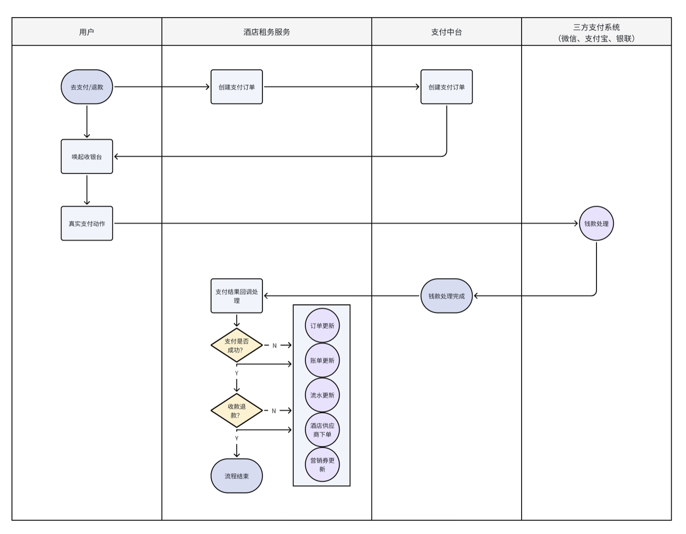
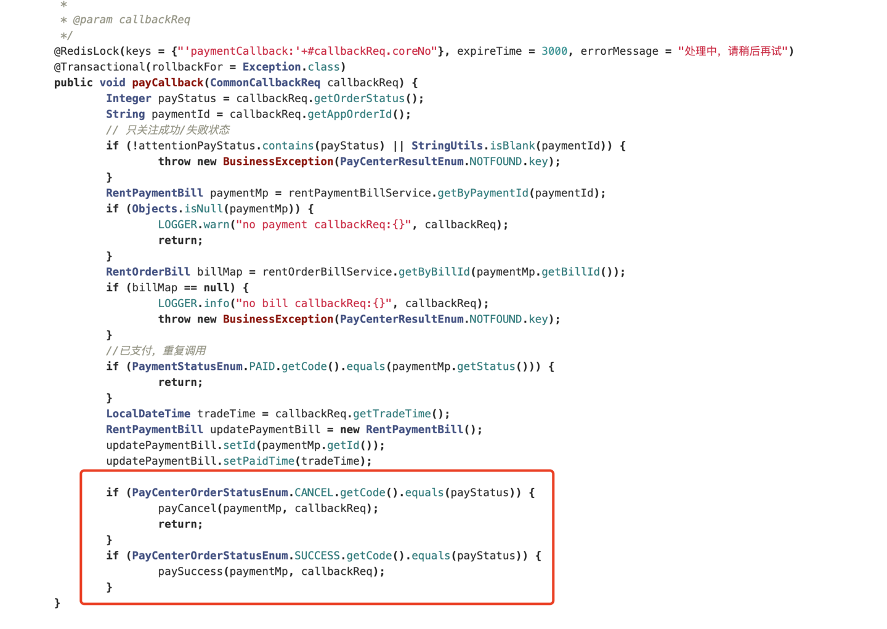
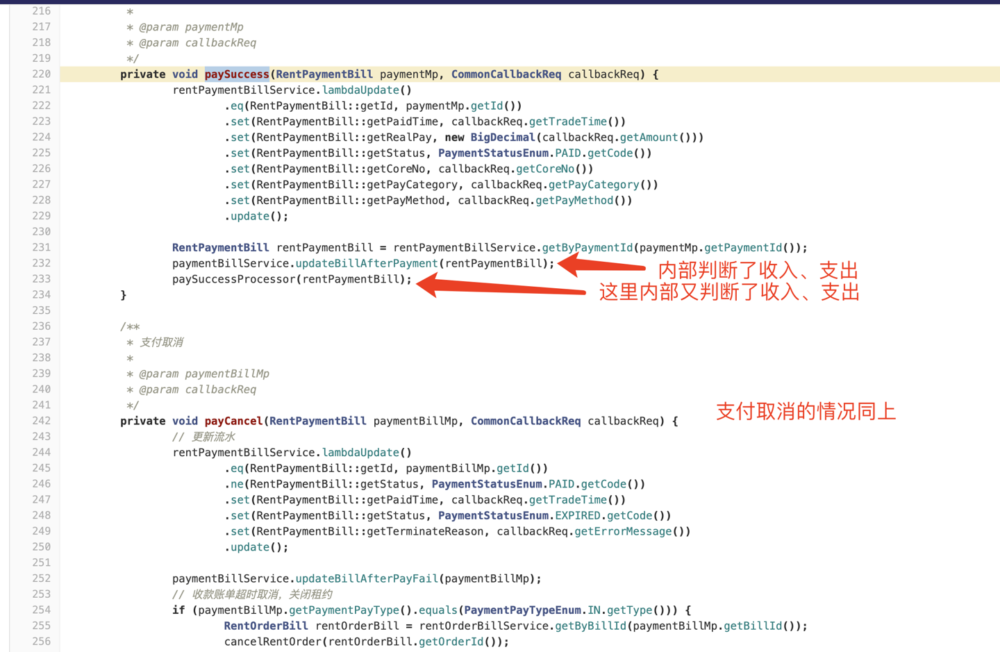
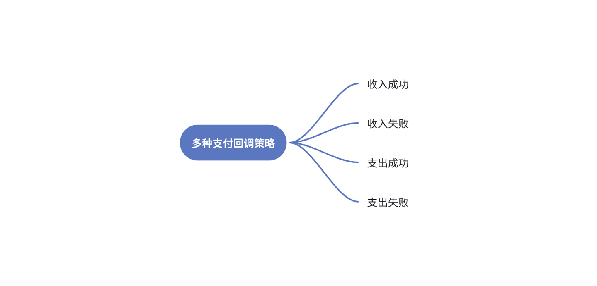
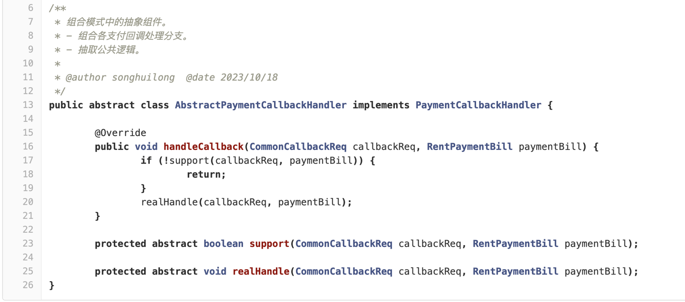
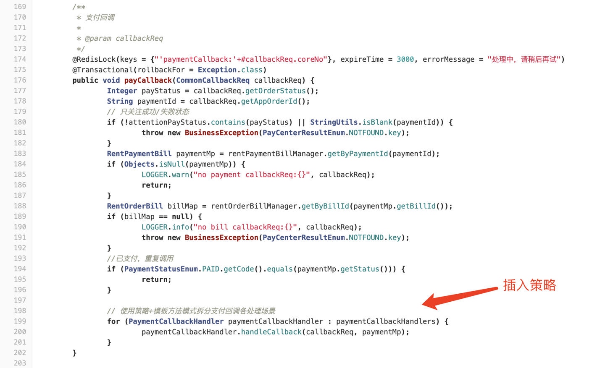
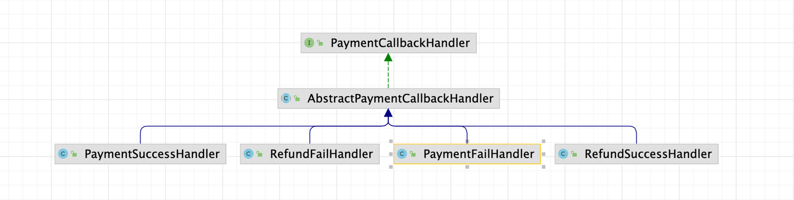

本文使用策略模式和模板方法模式来优化处理支付回调的代码结构，记录设计模式应用实例。
背景
hotel-zuwu 服务负责酒店订单履约、租约账单流转、支付、合同签约、分账等领域业务。
其中与支付中台（集团金融平台）交互的流程如下：

可以看到当收到支付中台回调后，需要做一系列的判断逻辑。
项目最初上线时，仅需考虑用户付款即平台收入的场景，因此回调接口中在一个service方法中处理，高效且清晰。
随着需求迭代，这里引入了用户退款即平台支出以及其他的场景，同时这块代码有初步开发完就交接的情况，因此代码结构、逻辑变得稍显混乱。
优化思路
1. 先分析优化前的代码
回调入口：

支付成功与取消入口： 
可以看到，判断逻辑主要两个大分支：
- 收入或支出
- 支付成功或取消
这里的问题在于，在每个具体处理的方法中，可能都需要判断彼此两个分支。在内部某个方法中，很可能遗漏某段逻辑。
整理下这里的分支，其实也就四种情况：
- 收入支付成功
- 收入支付取消
- 支出支付成功
- 支出支付失败
2. 再思考多分支情况的优化解法
针对分支多的情况，如果分支是一些离散的值，可以使用hashmap来替代分支语句。
如果分支在代码中表示的是不同的处理逻辑，可以考虑策略模式来优化代码间的协作结构。
因此，我们尝试使用策略模式来优化。上述四种情况正好对应四种策略。
策略模式是一种行为型设计模式，主要解决的问题是如何在运行时根据不同情况选择算法或行为。它允许定义一组算法（策略），将它们封装成对象，然后在运行时根据需要动态地选择要执行的策略。这种模式有助于减少大量的条件语句和分支结构，提高代码的可维护性和可扩展性。

每个策略中除了处理回调逻辑，还可以维护分支判断的状态，比如「收入支付成功」「收入支付取消」，这样我们可以直接用一个 List 注入所有策略类，增加一个 support 方法用于判断当前策略属于何种场景。
动手改造
定义通用骨架
我们首先使用模板方法模式来定义通用的骨架，抽取上述状态判断、运行逻辑：

实现具体策略
然后实现前面分析到的四种分支对应的Handler，support中定义分支的条件，realHandle中则定义分支下的具体处理逻辑。
以收入成功的分支为例：
|
|
新代码接入
由于回调入口的地方已经足够清晰，因此维持原状，这里我们仅将优化好的策略模式插入到回调处：

效果
最后看下改造完的结构：

可以看到，收入、支出、支付成功、支付取消 一目了然。增加逻辑再也不用担心会漏哪个场景了。
小结
本文，我们探讨了一个与支付回调流程相关的代码优化问题。
面对代码的些许混乱，我通过如下操作进行了改进：
- 首先分析项目背景、业务流程以及代码逻辑；
- 针对较为明显且核心的问题，思考应对其较合适的解法；
- 然后尝试编码改造；
- 最终评估效果：代码结构更加清晰、后续迭代的效率也得到了提升【如果这一步效果不佳，回到第二步继续】；
本案例对应的 code base 是一个较新的代码工程，因此历史债不重，优化工作相对容易。
但价值是明显的：
- 改造对工程代码质量有实际提升；
- 思考、实践经验可复用；